Introduction to JustifyAlpha
Daniel Lakens & Maximilian Maier
2021-06-08
intro_to_justifieR.RmdVignette Accompanying “Justify Your Alpha: A Primer on Two Practical Approaches”
The goal of JustifyAlpha is to provide ways for researchers to justify their alpha level when designing studies. Two approaches are currently implemented. The first function optimal_alpha allows users to computed balanced or minimized Type 1 and Type 2 error rates. The second approach uses the function ttestEvidence or ftestEvidence to lower the alpha level as a function of the sample size to prevent Lindley’s paradox.
Installation
You can install the released version of JustifyAlpha from GitHub with:
devtools::install_github("Lakens/JustifyAlpha")Minimizing Error Rates
Assume we plan to perform an indepedent t-test, where our smallest effect size of interest is d = 0.5, and we are planning to collect 64 participants in each condition. We would normally calculate power as follows:
pwr.t.test(d = 0.5, n = 64, sig.level = 0.05, type = 'two.sample', alternative = 'two.sided')$power
This analysis tells us that we have 80% power with a 5% alpha level for our smallest effect size of interest, d = 0.5, when we collect 64 participants in each condition.
If we design 2000 studies like this, the number of Type 1 and Type 2 errors we make depend on how often the null hypothesis is true, and how often the alternative hypothesis is true. Let’s assume both are equally likely. This means that in 0.5 × 2000 = 1000 studies the null hypothesis is true, and we will make 0.05 × 1000 = 50 Type 1 errors, so in 50 studies we will find a significant result, even though there is no true effect. In 0.5 × 2000 = 1000 studies the alternative hypothesis is true, and with 80% power we will make 0.2 × 1000 = 200 Type 2 errors, so in 200 studies we will not observe a significant result even if there is a true effect. Combining Type 1 and Type 2 errors, in the long run, we should expect 50 + 200 = 250 of our 2000 studies to yield an error. The combined error rate is therefore 250/2000 = 0.125.
The goal in Neyman-Pearson hypothesis testing is to control the number of errors we make, as we perform hypothesis tests. Researchers often rely on convention when setting error rates, and there is no special reason to set the Type 1 error rate at 5% and the Type 2 error rate at 20%. Indeed, there might be better choices when designing studies. For example, when collecting 64 participants per condition, we can set the Type 1 and Type 2 error rates in a way that reduced the number of errors we make, such that from the 2000 studies less than 250 studies yield misleading conclusions.
We can use the optimal_alpha function to compute the minimized error rates. The optimal_alpha function takes as input a power function, the relative cost of Type 1 and Type 2 errors (the default is 1, meaning both errors are equally costly), The prior odds of H1 versus H0 (the default is 1, meaning H1 and H0 are believed to be equally likely). We can convert odds to probabilities by calculating \(odds/(1+odds)\). For example, if the prior odds are 1, the prior probability is 1/(1+1) = 0.5. If the prior odds of H1 compared to H0 are 2, the prior probability of H1 is 2/(2+1) = 0.66. Analogous, we can convert from probability to odds by dividing the probability by 1 minus the probability. For example, if the prior probability of H1 is 0.66. The prior odds of H1 compared to H0 are 0.66/(1-0.66) = 2. Apart from the prior odds, we also need to specify whether to compute the minimized combined error rate (“minimize”) or balanced error rates (“balanced”), and whether to provide output for each iteration of the optimization function or not, and a plot or not. An example of the us of the function is provided below:
res1 <- optimal_alpha(power_function = "pwr.t.test(d=0.5, n=64, sig.level = x, type='two.sample', alternative='two.sided')$power",
error = "minimize",
costT1T2 = 1,
priorH1H0 = 1,
verbose = FALSE,
printplot = TRUE)
res1$alpha## [1] 0.09978841
res1$beta## [1] 0.1215426
res1$errorrate## [1] 0.1106655The output indicates that given the specific settings (e.g., weighing Type 1 and Type 2 errors equally, expecting H1 and H0 to be equally likely to be true) the combined error rate is minimized when (rounding to 3 decimal places) the alpha level is set to 0.10 (indicated by res$alpha), and the Type 2 error rate is set to 0.122 (indicated by res$beta). The expected error rate is then 0.111. In other words, if a researcher is interested in effects of d = 0.5, and plans to collect 64 participants in each condition, setting the Type 1 error rate to 10% will increase the power to 87.8%. If we would perform 2000 studies designed with these error rates, we would observe 0.5 (the prior probability that H0 is true) × 0.100 (the alpha level) × 2000 = 100 Type 1 errors, and 0.5 (the prior probability that H1 is true) × 0.122 (the Type 2 error rate) × 2000 = 122 Type 2 errors, for a total of 222 errors instead of 250. The combined error rate is therefore 222/2000 = 0.111. Indeed ,this is the value provided as the errorrate. In other words, by choosing a more optimal alpha level, we can design lines of research more efficiently, because we are less likely to make errors in our statistical inferences. This did increase the probability of making a Type 1 error (because we increased the alpha level), but this is compensated by reducing the probability of a Type 2 error even more.
The figure below recreates Figure 2 in Mudge et al, 2012.
resplot1 <- optimal_alpha(power_function = "pwr::pwr.t.test(d = 1, n = 3, sig.level = x, type = 'two.sample', alternative = 'two.sided')$power", error = "minimize", costT1T2 = 1, printplot = FALSE)
resplot2 <- optimal_alpha(power_function = "pwr::pwr.t.test(d = 1, n = 10, sig.level = x, type = 'two.sample', alternative = 'two.sided')$power", error = "minimize", costT1T2 = 1, printplot = FALSE)
resplot3 <- optimal_alpha(power_function = "pwr::pwr.t.test(d = 1, n = 30, sig.level = x, type = 'two.sample', alternative = 'two.sided')$power", error = "minimize", costT1T2 = 1, printplot = FALSE)
plot_data <- rbind(resplot1$plot_data, resplot2$plot_data, resplot3$plot_data)
plot_data$n <- as.factor(rep(c(3, 10, 30), each = 9999))
w_c_alpha_plot <- ggplot(data=plot_data, aes(x=alpha_list, y=w_c_list)) +
geom_line(size = 1.3, aes(linetype = n)) +
geom_point(aes(x = resplot1$alpha, y = (1 * resplot1$alpha + 1 * (resplot1$beta)) / (1 + 1)), color="red", size = 3) +
geom_point(aes(x = resplot2$alpha, y = (1 * resplot2$alpha + 1 * (resplot2$beta)) / (1 + 1)), color="red", size = 3) +
geom_point(aes(x = resplot3$alpha, y = (1 * resplot3$alpha + 1 * (resplot3$beta)) / (1 + 1)), color="red", size = 3) +
theme_minimal(base_size = 16) +
scale_x_continuous("alpha", seq(0,1,0.1)) +
scale_y_continuous("weighted combined error rate", seq(0,1,0.1), limits = c(0,1))
w_c_alpha_plotBalancing Error Rates
You can choose to minimize the combined error rates, but you can also decide that it makes most sense to balance the error rates. For example, you might think a Type 1 error is just as problematic as a Type 2 error, and therefore, you want to design a study that has balanced error rates for a smallest effect size of interest (e.g., a 5% Type 1 error rate and a 95% Type 2 error rate). The optimal_alpha function can compute the alpha level that would lead to a balanced Type 2 error rate.
res2 <- optimal_alpha(power_function = "pwr.t.test(d=0.5, n=64, sig.level = x, type='two.sample', alternative='two.sided')$power",
error = "balance",
costT1T2 = 1,
priorH1H0 = 1,
verbose = FALSE,
printplot = TRUE)
res2$alpha## [1] 0.1111217
res2$beta## [1] 0.1110457
res2$errorrate## [1] 0.1110837This balances the Type 1 and Type 2 error rates (with a maximum difference between the two of 0.0001). The alpha level is 11.11%, and the power is 88.9% (or the Type 2 error rate is 11.1%). Choosing to balance error rates is only slightly less efficient than minimizing the combined error rate in this example, with a combined error rate when balancing Type 1 and 2 errors of 22.22% compared to a minimized error rate of 22.13%.
Relative costs of Type 1 and Type 2 errors
So far we have assumed a Type 1 error and Type 2 error are equally costly. This means that we consider the consequences of a false positive just as bad as the consequences of a false negative. This is not the default in psychology, where researchers typically treat Type 1 errors as 4 times as bad as Type 2 errors. This is based on Cohen (1988), who proposed to aim for 80% power, because we use an alpha of 5%. The optimal_alpha function users to set the relative cost of Type 1 and Type 2 errors, costT1T2. By default this parameter is set to 1, meaning both types of errors are weighed equally. Changing the value to 4 means that Type 1 errors are weighed 4 times as much as Type 2 errors, or 4:1. This will change the weight of Type 1 errors compared to Type 2 errors, and thus also the alpha level at which combined costs of Type 1 and Type 2 errors are minimized.
res3 <- optimal_alpha(power_function = "pwr.t.test(d=0.5, n=64, sig.level = x, type='two.sample', alternative='two.sided')$power",
error = "minimize",
costT1T2 = 4,
priorH1H0 = 1,
verbose = FALSE,
printplot = TRUE)
res3$alpha## [1] 0.03268853
res3$beta## [1] 0.2524248
res3$errorrate## [1] 0.07663579Now, the alpha level that minimizes the combined Type 1 and Type 2 error rates is 3.27%. With 64 participants in each condition of an independent t-test the Type 2 error is 25.24%, and the expected combined error rate is 7.66%. If we would perform 2000 studies designed with these error rates, we would observe 0.5 (the prior probability that H0 is true) × 0.033 (the alpha level) × 2000 = 33 Type 1 errors, and 0.5 (the prior probability that H1 is true) × 0.252 (the Type 2 error rate) × 2000 = 252 Type 2 errors. Since we weigh Type 1 errors 4 times as much as Type 2 errors, we multiple the cost of the 33 Type 1 errors by 4, which makes 4×33 = 132, and to keep the weighted error rate between 0 and 1, we also multiple the 1000 studies where we expect H0 to be true by 4, such that the weighted combined error rate is (132+252)/(4000 + 1000) = 0.0768.
If we choose to compute balanced error rates, we not surprisingly get, with n = 64 per conditions, which gives us 80% power with an alpha of 5%, exactly these error rates, as this scenario actually put the cost of a Type 1 error are 4 times the cost of a Type 2 error.
res4 <- optimal_alpha(power_function = "pwr.t.test(d=0.5, n=64, sig.level = x, type='two.sample', alternative='two.sided')$power",
error = "balance",
costT1T2 = 4,
priorH1H0 = 1,
verbose = FALSE,
printplot = TRUE)
res4$alpha## [1] 0.04974484
res4$beta## [1] 0.1991642
res4$errorrate## [1] 0.07962871If we would perform 2000 studies designed with these error rates, we would observe 0.5 (the prior probability that H0 is true) × 0.05 (the alpha level) × 2000 = 50 Type 1 errors, and 0.5 (the prior probability that H1 is true) × 0.200 (the Type 2 error rate) × 2000 = 200 Type 2 errors, for a total of 250 errors. However, we weigh Type 1 errors 4 times as much as Type 2 errors (or 4:1). So the cost is or the 50 Type 1 errors is 4 × 50 = 200 (hence the balanced error rates, as the costs of Type 1 errors is now balanced with the cost for Type 2 errors). Because Type 1 errors are weighed four times as much as Type 2 errors, 0.8 of the weight is determined by Type 1 errors, and 0.2 of the weight is determined by Type 2 errors, and the weighted combined error rate is (0.8 × 0.05 + 0.2 × 0.20) = 0.08.
Prior probabilities of H0 and H1
So far, we have assumed that H0 and H1 are equally likely. We can change the prior probabilities that H0 is true (and you will observe a Type 1 error), or that the alternative hypothesis (H1) is true (and you will observe a Type 2 error). By incorporating these expectations, you can minimize or balance error rates in the long run (assuming your priors are correct). Priors can be specified using the priorH1H0 argument, which by default is 1 (H1 and H0 are equally likely). Setting it to 4 means you think the alternative hypothesis (and hence, Type 2 errors) are 4 times more likely than that the null hypothesis is true (and hence, Type 1 errors).
res5 <- optimal_alpha(power_function = "pwr.t.test(d=0.5, n=64, sig.level = x, type='two.sample', alternative='two.sided')$power",
error = "minimize",
costT1T2 = 1,
priorH1H0 = 4,
verbose = FALSE,
printplot = TRUE)
res5$alpha## [1] 0.2461469
res5$beta## [1] 0.04831345
res5$errorrate## [1] 0.08788013If you think H1 is four times more likely to be true than H0, you need to worry less about Type 1 errors, and now the alpha that minimizes the weighted error rates is 24.6%, with a power of 4.8%. If we would perform 2000 studies designed with these error rates, and we expect H1 is true 4 times as often as H0, then we expect H0 to be true in 20% (or 400) of the studies, and H1 to be true in 80% (or 1600) of the studies (as 1:4 = 20:80 = 400:1600). So, we should expect to observe 0.2 (the prior probability that H0 is true) × 0.246 (the alpha level) × 2000 = 98.4 Type 1 errors, and 0.8 (the prior probability that H1 is true) × 0.0483 (the Type 2 error rate) × 2000 = 77.3 Type 2 errors, for a total of 175.7 errors. Because we expect H1 to be four times as likely as H0, we weigh Type 2 errors for 0.8, and Type 1 errors for 0.2. The weighted combined error rate is (0.2 × 0.246 + 0.8 × 0.0483) = 0.08784.
The decision about priors is always subjective, as is the case in any decision under uncertainty. The more certain you are about auxiliary hypotheses and the stronger the theory, the higher your prior might be that you are right. Also, when you conduct a replication study, the prior probability of the hypothesis should usually be higher than when attempting to find a novel effect. The more a prediction goes against things we know or expect to be true, the more likely H0 should be. But when designing any study, we need to consider prior probabilities. You always make a choice - even if you choose to assume H0 is equally likely as H1.
Sample Size Justification
So far we have only discussed how to justify the alpha level given a fixed sample size. However, in practice researchers usually want to conduct power analysis. This can be incorporated smoothly when minimizing or balancing error rates. To do so, you simply need to specify the weighted combined error rate you are aiming for and the function optimal_sample will return the sample size as well as the alpha and beta required to achieve the desired weighted combined error rate.
res6 <- optimal_sample(power_function = "pwr.t.test(d=0.5, n = sample_n, sig.level = x, type='two.sample', alternative='two.sided')$power",
error = "minimize",
errorgoal = 0.05,
costT1T2 = 1,
priorH1H0 = 1)
res6## $alpha
## [1] 0.046575
##
## $beta
## [1] 0.05311184
##
## $errorrate
## [1] 0.04984342
##
## $objective
## [1] 0.04984342
##
## $samplesize
## [1] 105Using the code above, we see that if we aim to achieve a combined error rate of 0.05, we need 105 participants in each of two conditions for an independent t-test.
Specifying power functions
So far we have used only one function from the pwr package to specify the power function. However, any function can be entered. Below we illustrate some additional approaches. It is important to specify a power function that returns the power, where the alpha level is a variable x, and where the output is a power value between 0 and 1 (e.g., 0.8).
design_result <- Superpower::ANOVA_design(
design = "2b",
n = 64,
mu = c(0, 0.5),
sd = 1
)## Registered S3 methods overwritten by 'lme4':
## method from
## cooks.distance.influence.merMod car
## influence.merMod car
## dfbeta.influence.merMod car
## dfbetas.influence.merMod car
Superpower::ANOVA_exact(design_result, alpha_level = 0.05, verbose = FALSE)$main_results$power/100## [1] 0.8014596
Superpower::power_oneway_between(design_result, alpha_level = 0.05)$power/100## [1] 0.8014596
pwr.t.test(d=0.5, n=64, sig.level = 0.05, type='two.sample', alternative='two.sided')$power## [1] 0.8014596
res7 <- JustifyAlpha::optimal_alpha(power_function = "Superpower::power_oneway_between(design_result, alpha_level = x)$power/100",
error = "minimize",
costT1T2 = 1,
priorH1H0 = 1)
res7$alpha## [1] 0.09978841
res7$beta## [1] 0.1215426
res7$errorrate## [1] 0.1106655
res7$plot
res8x <- JustifyAlpha::optimal_alpha(power_function = "Superpower::ANOVA_exact( (Superpower::ANOVA_design(design = '2b', n = 64, mu = c(0, 0.5), sd = 1, plot = FALSE)), alpha_level = x, verbose = FALSE)$main_results$power/100",
error = "minimize",
costT1T2 = 1,
priorH1H0 = 1)
res8x$alpha## [1] 0.09978841
res8x$beta## [1] 0.1215426
res8x$errorrate## [1] 0.1106655
res8x$plot
Avoiding the Lindley Paradox
Sometimes we don’t know the prior odds or the effect size of interest. In this case we can justify the alpha level by aiming to avoid the Lindley paradox. The Lindley paradox arises from the difference between error rate control and likelihood ratios in statistics. When the power is high, it is possible that a significant p-value is actually more likely to occur under the alternative than under the null hypothesis. This situation, where we reject the null hypothesis because p < alpha, but the evidence based on the likelihood suggests the observed data is more likely under the null hypothesis than the alternative hypothesis, is considered the Lindley paradox. The figure below shows that the steeper the p-value distribution (which occurs as the sample size increases) the more to the left the point where the expected p-value distribution under the alternative will cross the uniform p-value distribution under H0. The solution to prevent Lindley’s paradox is to lower the alpha level as a function of the sample size.
P-value distributions for a two-sided independent t-test with N = 150 and d = 0.5 (black curve) or d = 0 (horizontal dashed line) which illustrates how p-values just below 0.05 can be more likely when there is no effect than when there is an effect.
A Bayes factor and a p-value are directly related, given a prior, and a sample size. They can both be computed directly from the t-value. In the plot below we see the Bayes factor (plotted on the vertical axis) and the p-value (plotted on the horizontal axis) for an independent t-test with 100 participants in each condition.
n1 <- 100
n2 <- 100
loops <- seq(from = 0, to = 3, by = 0.001)
p <- numeric(length(loops))
bf <- numeric(length(loops))
d <- numeric(length(loops))
tval <- numeric(length(loops))
i <- 0
for(t in loops){
i <- i+1
bf[i] <- exp(BayesFactor::ttest.tstat(t, n1, n2)$bf)
p[i] <- 2*pt(t, ((n1 + n2) - 2), lower=FALSE)
tval[i] <- t
d[i] <- t * sqrt((1/n1)+(1/n2))
}
plot(p, bf, type="l", lty=1, lwd=2, log = "y")
abline(v = seq(0,1,0.1), h = c(0, 1/10, 1/3, 1, 3, 10), col = "gray", lty = 1)We can easily see which Bayes factor threshold corresponds to a specific p-value. For a Bayes factor of 1, we get a p-value of:
## [1] 0.0462172So, as long as the observed p-value is smaller than 0.046 the data will provide stronger support for H1 than for H0.
JustifyAlpha allows users to directly compute the alpha level that enables them to avoid the Lindley paradox through the functions ftestEvidence and ttestEvidence, which calculate the alpha level that is needed so that a significance p-value is always more likely under the alternative hypothesis than under the null hypothesis, based on a specification of a prior for the alternative model. For a two sample t-test with 100 participants per group, we can do this using the following function.
res8 <- ttestEvidence("lindley", 100, 100)[[1]]
res8## [1] 0.04625576This shows that an alpha level of at least 0.046 would be required to avoid the Lindley paradox. Of course, researchers can also use an informed prior, or use the the likelihood of the data under the effect size of the alternative hypothesis. There are many approaches to prevent Lindley’s paradox. All boil down to lowering the alpha level as a function of the sample size, but they differ slightly the relation between the sample size and the alpha level.